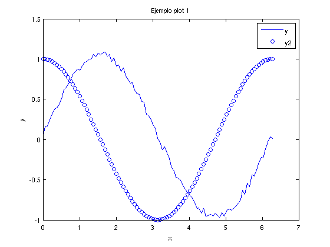
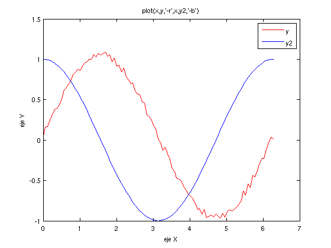
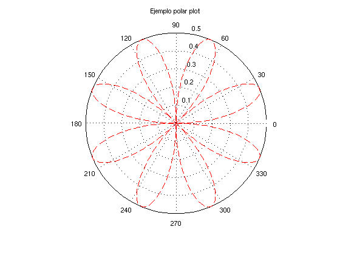
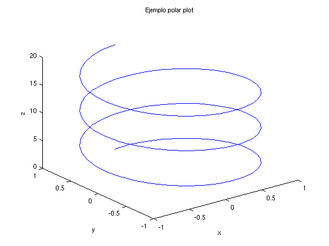
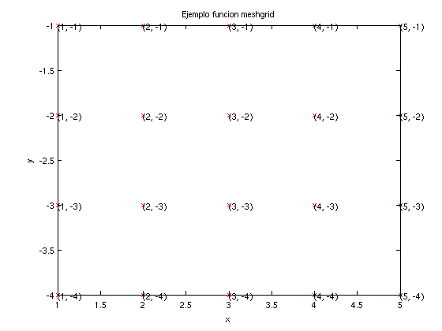
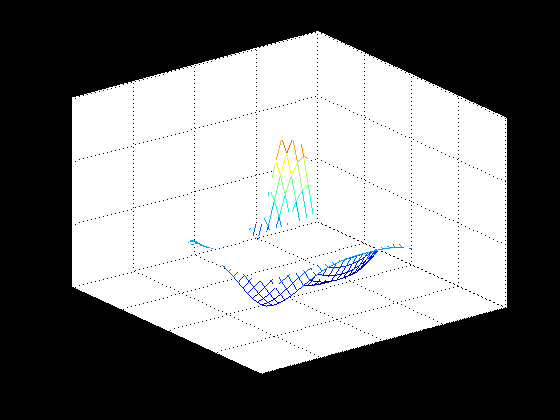
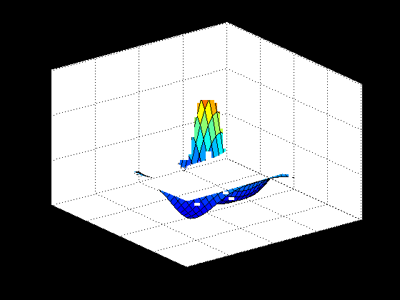
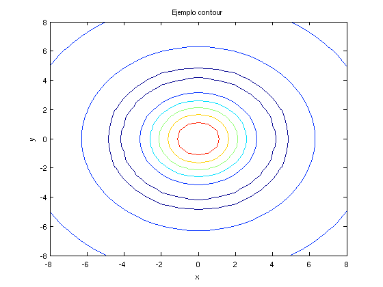

Tema 0b - Graficos y ficheros
METODOS NUMERICOS Y DE SIMULACION - Curso 2015-2015. Segundo curso del Grado en Fisica. Universidad de Sevilla.
Contents
- Lectura y escritura interactiva de variables
- Lectura y escritura de variables en ficheros binarios
- Lectura y escritura en ficheros de texto
- APERTURA, ESCRITURA Y CIERRE DE FICHEROS
- Lectura de datos en texto mediante textscan
- Escritura de datos con formato mediante fprintf
- Graficos 2D. Funcion plot
- Graficos de curvas 3D
- Graficos de superficies z = f(x,y). Funcion MESHGRID.
- Funciones surf y mesh
- TRABAJO PARA CASA
Lectura y escritura interactiva de variables
La funcion input retorna el valor de una variable desde el teclado, permitiendo imprimir un mensaje. La funcion disp imprime variables en un formato sencillo.
clc; % s = input('Como te llamas? ','s') % CUIDADO: NO FUNCIONA EN PUBLISH2HTML % n = input('Teclea la dimension de la matriz: ') % M = rand(n) % disp('Escrimos la matriz en pantalla tal cual') % M % disp('Y ahora con ''disp'''), disp(M)
Lectura y escritura de variables en ficheros binarios
Una lectura y escritura directa de variables en ficheros se realiza con los comandos save y load. Ambos comandos son capaces de trabajar con formatos de texto o binario. Estos comandos nos evitan tener que abrir y cerrar fichero formalmente. Por otra parte, permiten muy poco control sobre el formato en el que se escriben los datos.
clear; A = rand(20,2); B = rand(10,3); save % guarda todas las variables en un fichero denominado matlab.mat disp('Primer whos'), whos clear all; disp('Segundo whos'), whos %input('Preparado para recuperar variables? ') load % recupera todas las variables de fichero matlab.mat disp('Tercer whos'), whos
Saving to: /home/carlos/2015-2016/docencia/mns/tema0/matlab.mat Primer whos Name Size Bytes Class Attributes A 20x2 320 double B 10x3 240 double Segundo whos Loading from: matlab.mat Tercer whos Name Size Bytes Class Attributes A 20x2 320 double B 10x3 240 double
Lectura y escritura en ficheros de texto
clear; A = rand(20,2); B = rand(10,3); save ftexto1.txt -ASCII save ftexto2.txt A -ASCII clear A B; load ftexto2.txt ftexto2 A = load('ftexto2.txt')
ftexto2 =
0.0263 0.8063
0.3188 0.2222
0.5330 0.9998
0.3268 0.0637
0.6022 0.4255
0.3619 0.4043
0.1349 0.4003
0.9138 0.1119
0.6406 0.4243
0.6588 0.6135
0.6753 0.9881
0.7446 0.2199
0.8422 0.3541
0.5167 0.2662
0.1519 0.2915
0.3807 0.1884
0.8210 0.0229
0.1714 0.4494
0.3300 0.2436
0.9665 0.8687
A =
0.0263 0.8063
0.3188 0.2222
0.5330 0.9998
0.3268 0.0637
0.6022 0.4255
0.3619 0.4043
0.1349 0.4003
0.9138 0.1119
0.6406 0.4243
0.6588 0.6135
0.6753 0.9881
0.7446 0.2199
0.8422 0.3541
0.5167 0.2662
0.1519 0.2915
0.3807 0.1884
0.8210 0.0229
0.1714 0.4494
0.3300 0.2436
0.9665 0.8687
APERTURA, ESCRITURA Y CIERRE DE FICHEROS
La apertura y cierre de ficheros se realiza con las funciones fopen y fclose respetivamente.
[fi, texto] = fopen('filename','c')
st = flose(fi)
dir *.txt % lista ficheros [fi, texto] = fopen('fprueba.txt','w') st = fclose(fi) dir *.txt
fprueba.txt ftexto2.txt prueba.txt
ftexto1.txt misdatos.txt
fi =
3
texto =
''
st =
0
fprueba.txt ftexto2.txt prueba.txt
ftexto1.txt misdatos.txt
Lectura de datos en texto mediante textscan
La funcion textscan esta pensada para leer ficheros de datos en columnas indicando el formato. Lo mostramos con un ejemplo sobre el fichero misdatos.txt (tomado de la ayuda de Matlab) que contiene los siguientes datos
Sally Type1 12.34 45 1.23e10 inf NaN Yes
Joe Type2 23.54 60 9e19 -inf 0.001 No
Bill Type3 34.90 12 2e5 10 100 NoLa funcion textscan devuelve un array de celdas cada una de las cuales es una columna del fichero. En cuanto a las cadenas de formato: %s indica una cadena de caracteres, %d un entero, %f un numero de coma flotante, etc (conviene consultar la ayuda de textscan).
fi = fopen('misdatos.txt','r'); C = textscan(fi, '%s%s%f32%d8%u%f%f%s','CommentStyle','%'); fclose(fi); C{1},C{2},C{3} x = C{3}; whos x
ans =
'Sally'
'Joe'
'Bill'
ans =
'Type1'
'Type2'
'Type3'
ans =
12.3400
23.5400
34.9000
Name Size Bytes Class Attributes
x 3x1 12 single
Escritura de datos con formato mediante fprintf
La funcion mas habitual para escribir datos con formato es fprintf.
fprintf(fi, 'cadena de control', var1, var2, ...)
clc; fi = fopen('prueba.txt','w'); x = 1:2:10; y = x + 1; for i=1:length(x) fprintf(fi, '%d %5.3f\n', x(i), y(i)); end % version sin bucles (mas bien confusa...) %fprintf(fi, '%d %5.3f\n', [x; y] ); fclose(fi); type 'prueba.txt'
1 2.000 3 4.000 5 6.000 7 8.000 9 10.000
Graficos 2D. Funcion plot
La funcion plot es la funcion basica para dibujar graficos bidimensionales. Dibuja los valores de un vector frente a otro en un grafico bidimensional. Admite varios pares de vectores y especificaciones de estilo de linea, entre otras mucha opciones.
x = 0:pi/50:2*pi; y = sin(x) + 0.1*rand(size(x)); y2 = cos(x); figure('Name','Ejemplo plot 1'); % abre una nueva ventana de graficos plot(x,y,'-b') hold on; plot(x,y2,'ob'); xlabel('x'); ylabel('y') hold off; title( get( gcf, 'Name' )); legend('y','y2'); figure('Name','Ejemplo plot 2'); plot(x,y,'-r',x,y2,'-b'); title('plot(x,y,''-r'',x,y2,''-b'')') legend('y','y2'); xlabel('eje X'); ylabel('eje Y'); % Variaciones de esta funcion son plotyy, loglog, semlogx, etc. Una pequeña % galeria puede encontrarse en % % http://es.mathworks.com/discovery/gallery.html % % o bien en la seccion demos de la ayuda de Matlab. Normalmente, existe una % funcion Matlab ya creada para la mayoria de las necesidades habituales y % no tan habituales. % figure('Name','Ejemplo polar plot'); % ejemplo tomado de la ayuda de Matlab t = 0:.01:2*pi; polar(t,sin(2*t).*cos(2*t),'--r'); title( get( gcf, 'Name' )); % Otros comandos relacionados con la creacion de figuras son los % siguientes: % % - figure: crea una nueva ventana grafica. % - figure(n): hace que la ventana n pase a ser la activa. % - clf: borra el contenido de la ventana activa. % - gcf: devuelve el numero de la ventana activa en ese momento % - close: cierra la figura activa. % - close(n): cierra la figura n-esima. % - hold on: mantiene el grafico disponible para dibujar nuevas curvas % sobre el. % - hold off: anula a hold on.  
Graficos de curvas 3D
La funcion plot3 es analoga a la funcion plot
figure('Name','Ejemplo polar plot'); % ecuaciones parametricas de una helice t = linspace( 0, 6*pi, 100); x = sin(t); y = cos(t); z = t; plot3( x, y , z, '-'); xlabel('x'); ylabel('y'); zlabel('z'); title( get( gcf, 'Name' ));
Graficos de superficies z = f(x,y). Funcion MESHGRID.
Para dibujar una superficie dada por z = f(x,y) necesitamos conocer los valores de z sobre un mallado bidimensional x, y. Esto se hace de la siguiente manera:
- se genera una matriz X con las coordenadas x de una matriz de puntos del dominio - idem con Y - se halla f(X,Y)
Las matrices X, Y son generadas a partir de vectores monodimensionales por medio de la funcion meshgrid.
x = 1:5; y = -1:-1:-4; % los ponemos de distinto signo para que se distingan [X,Y] = meshgrid( 1:5, -1:-1:-4); figure('Name','Ejemplo funcion meshgrid'); plot(X,Y,'xr'); xlabel('x'); ylabel('y'); title( get( gcf, 'Name' )); hold on; % imprimimos los pares de valores sobre un grafico para que quede mas claro for ii = 1:length(x) for jj = 1:length(y) text(x(ii),y(jj), sprintf('(%d, %d) ',x(ii),y(jj) ) ) end fprintf('\n'); end

Funciones surf y mesh
x = -8:0.5:8; y = x; [X, Y] = meshgrid( x, y); R = sqrt( X.^2 + Y.^2) + eps; W = sin(R) ./ R; figure('Name','Ejemplo mesh'); mesh(X,Y,W); xlabel('x'); ylabel('y'); zlabel('z'); title( get( gcf, 'Name' )); figure('Name','Ejemplo surf'); surf(X,Y,W); xlabel('x'); ylabel('y'); zlabel('z'); title( get( gcf, 'Name' )); figure('Name','Ejemplo contour'); [cs, h] = contour(X,Y,W); %clabel( cs, h); % pone rotulos a las lineas de nivel xlabel('x'); ylabel('y'); title( get( gcf, 'Name' ));  
TRABAJO PARA CASA
- Repasar los ejemplos que aparecen en este fichero, haciendo variaciones sobre ellos. Tambien conviene consultar la ayuda de Matlab de las funciones que hemos utilizado, mediante el comando
help nombrefuncion
- De nuevo, leer los apartados correspondientes de los apuntes "Aprenda Matlab como si estuviera en primero".
* los arrays de celdas se tratan en el apartado 5.4
* la entrada y salida de datos se trata en los apartado 6.5 y 6.6,
junto con algunos comentarios respecto a las cadenas de
caracteres. No trata la funcion textscan sino su predecesora
textread, que ya no se recomienda (consultar help textread).
* Los capitulos 8 y 9 tratan los temas de graficos. Esta bien
echarles un vistazo sin entrar en los apartados mas complicados
(a partir del apartado 9.2.1).También conviene echar un vistazo al apartado 2.5.7 acerca del debugger.